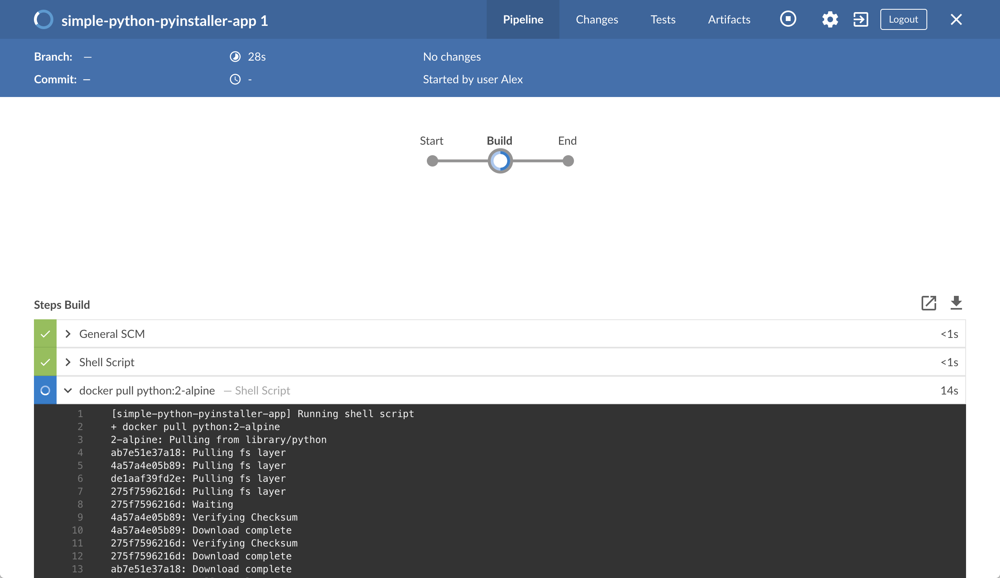
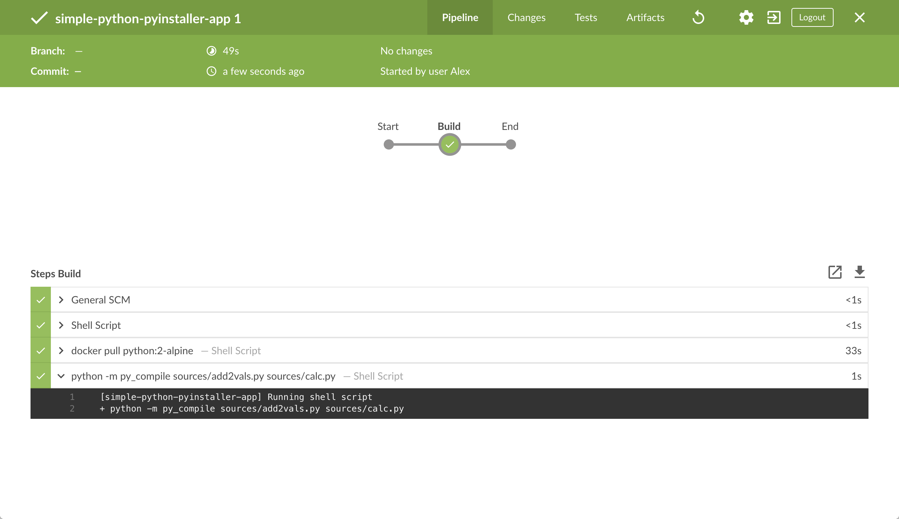
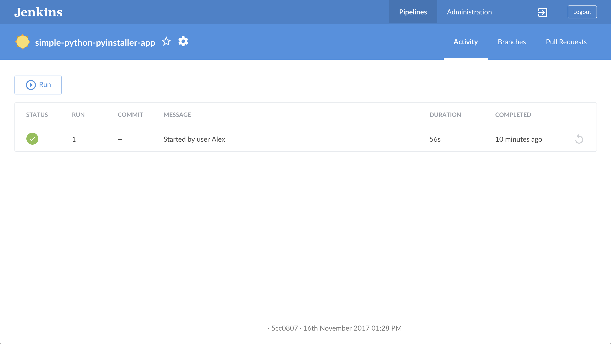
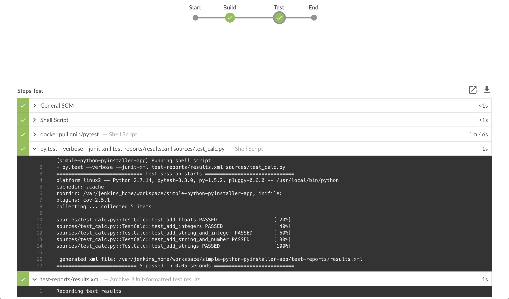
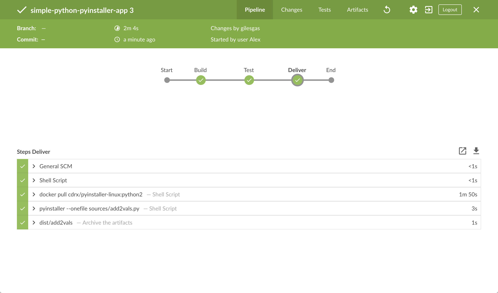
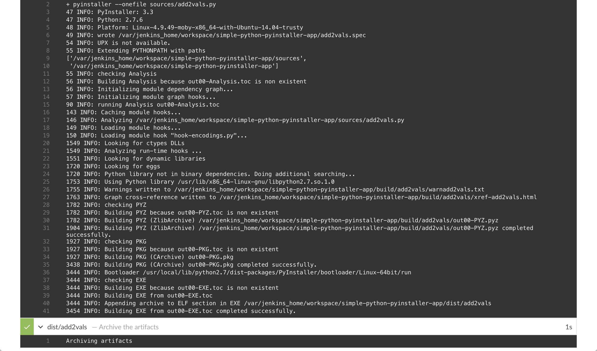
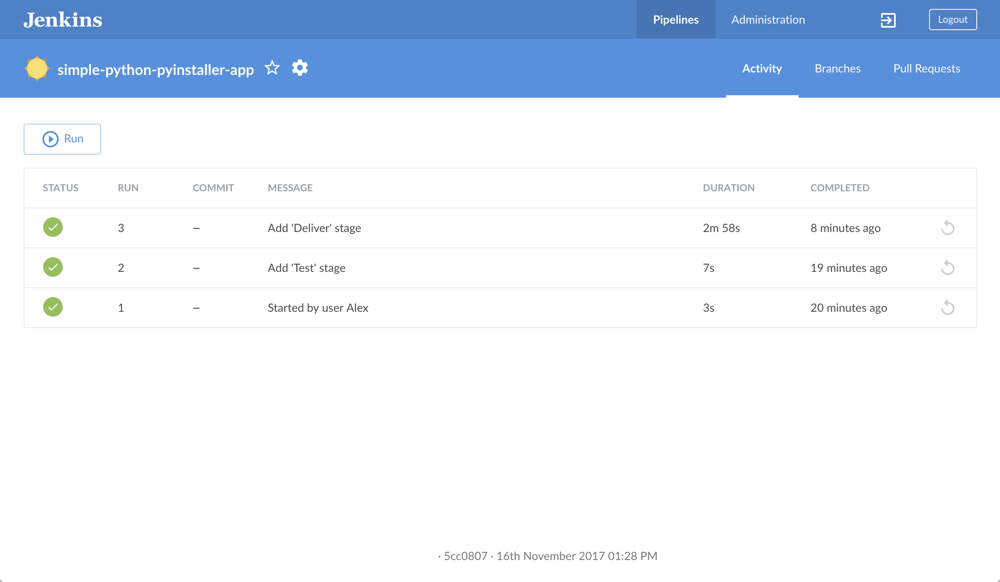
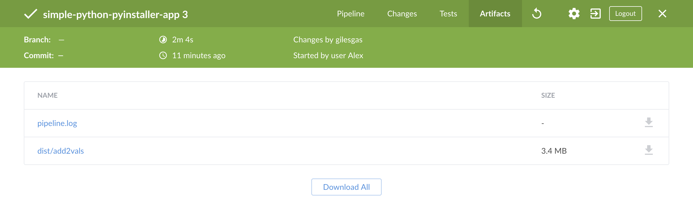

docker run \
--rm \
-u root \
-p 8080:8080 \
-v jenkins-data:/var/jenkins_home \ (1)
-v /var/run/docker.sock:/var/run/docker.sock \
-v "$HOME":/home \ (2)
jenkinsci/blueocean使用PyInstaller构建Python应用
Table of Contents
本教程将向你展示如何使用Jenkins编排构建一个使用 PyInstaller管理的简单Python应用程序。
如果你是一个 Python 开发者,对CI/CD概念不了解 或者你熟悉这些概念却不知道如何使用Jenkins完成构建,那么本教程很适合你。
示例Python应用（你可以从GitHub的示例仓库中获取）是一个输出两个值的和的命令行工具“add2vals”。如果至少有一个值是字符串，那么“add2vals”就会将这两个值都当做字符串并将其连接起来。 “cal”库“add2”函数（“add2vals”导入）伴随着一组单元测试。 这些测试是用pytest测试，以检查这个函数是否像预期那样工作并将测试结果保存到Junit XML报告中。
"add2vals"工具通过PyInstaller进行交付，PyInstaller将该工具转换成一个Linux的独立的可执行的文件, 你可以在没有Python的情况下通过Jenkins下载并执行该命令行。
Note: 与本文档的其他教程不同, 本教程需要下载大约500MB的Docker镜像数据。
Duration: 本教程需要花费20-40分钟的时间完成 (假设你已满足下文的 配置要求 )。 确切的耗时取决于你机器的性能， 以及你是否完成过在Docker中运行Jenkins 请参考另一个教程。
你可以在任何时间停止该教程，并从你离开的地方继续。
如果你已经运行了 其他教程, 你可以跳过下面的 配置要求 和 在Docker中运行 Jenkins 章节继续 fork示例仓库. (确保你已在本地安装了 Git 。) 如果你要重启 Jenkins, 只需遵照下面的重启指令 停止和重启 Jenkins 然后继续.。
配置要求
对于本教程，您将需要：
-
安装有macOS，Linux或Windows操作系统的机器，并拥有以下配置：
-
最小256MB内存, 推荐512MB以上。
-
10GB硬盘空间， 用于安装Jenkins，您的Docker镜像和容器。
-
-
安装有以下软件:
-
Docker - 在安装Jenkins页面的安装Docker章节阅读更多信息。
注意: 如果您使用Linux，本教程假定您没有以root用户的身份运行Docker命令，而是使用单个用户帐户访问本教程中使用的其他工具。 -
Git and optionally GitHub Desktop
-
在 Docker中运行Jenkins
在本教程中, 将Jenkins作为 Docker 容器并从
jenkinsci/blueocean Docker
镜像中运行。
要在 Docker中运行Jenkins, 请遵循下面的macOS 和 Linux 或 Windows相关文档说明进行操作。 .
你可以在 Docker和 Installing Jenkins 页面的 Downloading and running Jenkins in Docker部分阅读更多有关Docker容器和镜像概念的信息。
在 macOS 和 Linux 系统上
-
打开终端窗口
-
使用下面的
docker run命令运行jenkinsci/blueocean镜像作为Docker中的一个容器(记住，如果本地没有镜像，这个命令会自动下载):1 将容器中的 /var/jenkins_home目录映射到 Docker volume ，并将其命名为jenkins-data。如果该卷不存在, 那么docker run命令会自动为你创建卷。2 将主机上的`$HOME` 目录 (即你的本地)映射到 (通常是 /Users/<your-username>目录) 到容器的/home目录。Note: 如果复制或粘贴上面的命令片段不起作用, 尝试复制和粘贴这个没有注释的版本:
docker run \ --rm \ -u root \ -p 8080:8080 \ -v jenkins-data:/var/jenkins_home \ -v /var/run/docker.sock:/var/run/docker.sock \ -v "$HOME":/home \ jenkinsci/blueocean -
继续 安装向导。
在 Windows 系统
-
打开命令提示窗口。
-
使用下面的
docker run命令运行jenkinsci/blueocean镜像作为Docker中的一个容器(记住，如果本地没有镜像，这个命令会自动下载):docker run ^ --rm ^ -u root ^ -p 8080:8080 ^ -v jenkins-data:/var/jenkins_home ^ -v /var/run/docker.sock:/var/run/docker.sock ^ -v "%HOMEPATH%":/home ^ jenkinsci/blueocean
对这些选项的解释, 请参考上面的 macOS 和 Linux 说明。
-
继续安装向导。
访问 Jenkins/Blue Ocean Docker 容器
如果你有一些使用 Docker 的经验，希望或需要使用
docker exec
命令通过一个终端/命令提示符来访问
Jenkins/Blue Ocean Docker 容器, 你可以添加如 --name jenkins-tutorials 选项(与上面的
docker run
), 这将会给Jenkins/Blue Ocean Docker容器一个名字
"jenkins-tutorials"。
这意味着你可以通过 docker exec 命令访问Jenkins/Blue Ocean 容器(通过一个单独的终端
/命令提示窗口) ，例如:
docker exec -it jenkins-tutorials bash
安装向导
在你访问 Jenkins之前, 你需要执行一些快速的 "一次性" 步骤。
解锁 Jenkins
当你第一次访问一个新的 Jenkins 实例时, 要求你使用自动生成的密码对其进行解锁。
-
当在终端/命令提示窗口出现两组星号时, 浏览
http://localhost:8080并等待 Unlock Jenkins 页面出现。
-
再次从终端/命令提示窗口, 复制自动生成的字母数字密码(在两组星号之间)。

-
在 Unlock Jenkins 页面, 粘贴该密码到 Administrator password 字段并点击 Continue。
使用插件自定义 Jenkins
在 解锁 Jenkins后, Customize Jenkins 页面出现。
在该页面，点击 Install suggested plugins。
安装向导显示了正在配置的Jenkins的进程，以及建议安装的插件。这个过程肯需要几分钟。
停止和重启 Jenkins
在本教程的其余部分, 你可以通过在终端/命令提示窗口输入 Ctrl-C`停止 Jenkins/Blue Ocean
Docker 容器，你可以从中运行<<run-jenkins-in-docker,上面>>的 `docker run ... 命令。
要重启Jenkins/Blue Ocean Docker 容器:
-
在上面的 macOS,Linux 或 Windows上运行相同的
docker run ...命令 。
Note: 如果有更新的话，该进程会更新jenkinsci/blueoceanDocker 镜像。 -
浏览`http://localhost:8080`。
-
等待直到登录页面出现并登陆。
Fork 和 clone GitHub上的示例仓库
通过应用的源代码的示例仓库 fork 到你自己的GitHub账号中，然后在本地clone这个fork的方式，从GitHub上获取 "add" Python 应用。
-
确保你拥有 GitHub 账号。 如果没有GitHub账号, 在 GitHub 网站注册一个免费的账号。
-
在 GitHub上Fork
simple-python-pyinstaller-app到你本地的 GitHub 账号。在这个过程中如果你需要帮助, 请参考GitHub网站的 Fork A Repo 文档了解更多信息。 -
Clone 你 fork的
simple-python-pyinstaller-app仓库 (在 GitHub 上) 到你本地的机器。要开始这个过程, 请执行以下操作 (你的操作系统的用户账号为<your-username>):-
如果你的机器上安装了 GitHub 桌面应用程序:
-
在 GitHub上, 点击你fork的仓库的 Clone or download 按钮, 然后 Open in Desktop.
-
再 GitHub 桌面, 在点击 Clone a Repository 对话框的击 Clone 之前, 确保 Local Path 是:
-
macOS操作系统
/Users/<your-username>/Documents/GitHub/simple-python-pyinstaller-app -
Linux操作系统
/home/<your-username>/GitHub/simple-python-pyinstaller-app -
Windows操作系统
C:\Users\<your-username>\Documents\GitHub\simple-python-pyinstaller-app
-
-
-
另外:
-
打开一个终端/命令行提示符 ，
cd到对应的目录 :-
macOS操作系统 -
/Users/<your-username>/Documents/GitHub/ -
Linux操作系统 -
/home/<your-username>/GitHub/ -
Windows操作系统 -
C:\Users\<your-username>\Documents\GitHub\(通过使用 Git bash 命令行窗口，而不是通用的 Microsoft 命令提示符)
-
-
运行一下命令来继续/完成 clone 你 fork 到的仓库
git clone https://github.com/YOUR-GITHUB-ACCOUNT-NAME/simple-python-pyinstaller-app
你的GitHub账号的名称是YOUR-GITHUB-ACCOUNT-NAME。
-
-
使用Jenkins构建你的流水线项目
-
回到 Jenkins, 如果需要的话再次登录并点击 Welcome to Jenkins! 下的 create new jobs + Note: 如果你没有看到上述按钮, 点击左上的 New Item 。
-
在 Enter an item name 域中, 指定你新的 Pipeline 项目的名称 (比如
simple-python-pyinstaller-app)。 -
向下滚动并点击 Pipeline, 点击页面底部的 OK 。
-
( Optional ) 在下一页的 Description 域中填写你的 Pipeline 的描述 (比如
An entry-level Pipeline demonstrating how to use Jenkins to build a simple Python application with PyInstaller.) -
点击页面顶部的 Pipeline 选项卡 向下滚动到 Pipeline 部分。
-
从 Definition 域中, 选择 Pipeline script from SCM 选项。 该选项命令 Jenkins 从源控制管理(SCM)获取你的流水线, 这会是你clone到本地的 Git 仓库。
-
从 the SCM 域中, 选择 Git。
-
在 Repository URL 域中, 填写你本地clone的仓库 above的目录路径, 从你的主机的用户账户/主目录, 映射到Jenkins容器的
/home目录 - 即-
macOS -
/home/Documents/GitHub/simple-python-pyinstaller-app -
Linux -
/home/GitHub/simple-python-pyinstaller-app -
Windows -
/home/Documents/GitHub/simple-python-pyinstaller-app
-
-
点击 Save 保存你的新的流水线项目。你现在准备生成你的
Jenkinsfile,检查你clone到本地 的Git 仓库。
将初始流水线创建为 Jenkinsfile
你现在准备构建你的流水，它将在Jenkins中使用PyInstaller自动构建你的 Python
应用。你的流水线将会被创建作为
Jenkinsfile, 它将会被提交到你clone到本地的 Git 仓库
(simple-python-pyinstaller-app)。
这是 "流水线即代码"的基础, 他将连续支付流水线作为应用程序的一部，像其他代码一样进行版本化和审查。 了解更多在 用户手册的Pipeline 和 Using a Jenkinsfile 章节。
首先, 创建一个带有 "Build" 阶段的初始流水线， 该阶段为你的应用执行整个生产过程的第一部分。 "Build" 部分 下载一个 Python Docker 镜像并将它作为 Docker 容器运行, 它将 你的简单的 Python 应用编译成字节码。
-
使用你最称手的文本编辑器或 IDE, 在你的本地
simple-python-pyinstaller-appGit仓库的根目录下生成并保存一个新的名为 `Jenkinsfile`的文本文件。 -
复制并粘贴下面的声明式流水线代码到你空的 `Jenkinsfile`文件中:
pipeline { agent none (1) stages { stage('Build') { (2) agent { docker { image 'python:2-alpine' (3) } } steps { sh 'python -m py_compile sources/add2vals.py sources/calc.py' (4) } } } }1 流水线代码块顶部的 agent部分指定的的none参数意味着不会为 整个流水线的执行分配全局代理 ，并且每个stage指令必须制定自己的agent部分。2 定义名为`Build` 的 stage(指令) ，它出现在 Jenkins UI中。3 image参数 (参考agent部分的docker参数) 下载python:2-alpineDocker image (如果他在你的主机上不可用) 并将它作为一个独立的容器运行。 这意味着:-
你将拥有独立的运行在Docker的Jenkins 和 Python 容器。
-
Python 容器成为 Jenkins 用来运行你流水线项目的
Build阶段的 agent 。 然而, 这个容器寿命较短 - 他的生命周期只是 你的Build阶段的执行的时间. <4>sh步骤 (参考steps章节) 运行 Python 命令将你的应用和它的calc库 转换成字节码文件 (每个都有.pyc扩展), 被放在`sources` 工作区目录 (在Jenkins容器的/var/jenkins_home/workspace/simple-python-pyinstaller-app目录下)。
-
-
保存并提交你编辑的
Jenkinsfile到本地simple-python-pyinstaller-appGit 仓库。 比如在simple-python-pyinstaller-app仓库, 运行命令:
git add .
然后
git commit -m "Add initial Jenkinsfile" -
再次回到 Jenkins , 如果需要的话再次登录并点击左边的 Open Blue Ocean 来访问 Jenkins的 Blue Ocean 界面。
-
在 This job has not been run 消息框, 点击 Run, 然后快速的点击出现在右下方的 OPEN 链接观察Jenkins 运行你的流水线项目. 如果你不能点击 OPEN 链接, 点击 Blue Ocean 主界面的行来使用这一特性。
Note: 完成第一次的运行你需要等几分钟。 在对你本地的simple-python-pyinstaller-appGit 仓库进行clone后, Jenkins:-
最初将这个项目在代理上排队运行。
-
下载 Python Docker 镜像并在 Docker上的容器中运行它.

-
在 Python 容器运行
Build阶段 (定义在Jenkinsfile`文件中)。 在这期间, Python使用 `py_compile组件将你的Python应用的代码和它的calc库编译成字节码, 它被保存在sources工作区目录(在 Jenkins 的主目录里)。
如果Jenkins编译Python应用成功，Blue Ocean界面会变成绿色 。

-
-
点击右上方的 X 回到 Blue Ocean 主界面。

为你的流水线添加测试阶段
-
回到你的文本编辑器/IDE ,打开`Jenkinsfile` 文件。
-
复制并粘贴下面的声明式流水线语法到`Jenkinsfile`的 `Build`阶段下面:
stage('Test') { agent { docker { image 'qnib/pytest' } } steps { sh 'py.test --verbose --junit-xml test-reports/results.xml sources/test_calc.py' } post { always { junit 'test-reports/results.xml' } } }结果是:
pipeline { agent none stages { stage('Build') { agent { docker { image 'python:2-alpine' } } steps { sh 'python -m py_compile sources/add2vals.py sources/calc.py' } } stage('Test') { (1) agent { docker { image 'qnib/pytest' (2) } } steps { sh 'py.test --verbose --junit-xml test-reports/results.xml sources/test_calc.py' (3) } post { always { junit 'test-reports/results.xml' (4) } } } } }1 定义名为`Test`的 stage(指令) ，它出现在Jenkins UI中。2 This image参数 (参考agent部分的docker参数) 下载qnib:pytestDocker image (如果它在你的机器上不可用)并将它作为一个独立的容器运行。 这意味着:-
你将拥有独立的运行在Docker的Jenkins 和 Pytest 容器。
-
pytest 容器成为Jenkins 用来运行你流水线项目的
Test阶段的 agent。这个容器的生命周期可以持续你的Test阶段的执行过程。
3 这里的 sh步骤 (参考steps章节) 在sources/test_calc.py`执行 pytest的 `py.test命令 , 它在"calc" 库的add2函数 (被 简单的 Python 应用的add2vals`使用)运行了一系列的单元测试 (定义在 `test_calc.py) 。The:-
--verbose选项使py.test在Jenkinds/Blue Ocean界面生成详细输出。 -
--junit-xml test-reports/results.xml选项使py.test生成 JUnit XML 报告,它被保存到test-reports/results.xml(在Jenkins容器的/var/jenkins_home/workspace/simple-python-pyinstaller-app目录下 )。
4 这里的 junit步骤 (由 JUnit Plugin提供) 归档了 JUnit XML 报告 (由py.test命令生成) 并通过Jenkins界面公开结果。在 Blue Ocean, 可以通过流水线运行的 Tests 页面访问该结果。post部分的always条件包含junit阶段， 确保不论阶段的输出是什么，步骤 always 在`Test`阶段的_at the completion_ 被执行。 -
-
保存并提交你编辑的
Jenkinsfile到本地的simple-python-pyinstaller-appGit 仓库。比如在simple-python-pyinstaller-app目录下, 运行这些命令:
git stage .
然后
git commit -m "Add 'Test' stage" -
再次回到 Jenkins , 如果必要再次登录并进入 Jenkins的Blue Ocean 界面。
-
点击左上方的 Run , 然后快速的点击出现在右下方的 OPEN 链接来查看 Jenkins 运行你改进后的流水线项目。如果你不能点击 OPEN 链接, 点击Blue Ocean主界面的 top 行 来访问这一特性。
Note: 可能需要几分钟来下载qnib:pytestDocker 镜像 (如果之前没做过)。
如果你改进后的流水线项目运行成功, Blue Ocean 界面将会是这样的. 另外注意 "Test" 阶段。 你可以点击之前的 "Build" 阶段循环的访问该阶段的输出。
-
点击右上方的 X 返回到 Blue Ocean 主界面。
给你的流水线添加最终交付阶段
-
回到你的文本编辑器/IDE 并打开
Jenkinsfile文件。 -
复制并粘贴下面的声明式流水线语法到
Jenkinsfile`的 `Test阶段下方:stage('Deliver') { agent { docker { image 'cdrx/pyinstaller-linux:python2' } } steps { sh 'pyinstaller --onefile sources/add2vals.py' } post { success { archiveArtifacts 'dist/add2vals' } } }结果是:
pipeline { agent none stages { stage('Build') { agent { docker { image 'python:2-alpine' } } steps { sh 'python -m py_compile sources/add2vals.py sources/calc.py' } } stage('Test') { agent { docker { image 'qnib/pytest' } } steps { sh 'py.test --verbose --junit-xml test-reports/results.xml sources/test_calc.py' } post { always { junit 'test-reports/results.xml' } } } stage('Deliver') { (1) agent { docker { image 'cdrx/pyinstaller-linux:python2' (2) } } steps { sh 'pyinstaller --onefile sources/add2vals.py' (3) } post { success { archiveArtifacts 'dist/add2vals' (4) } } } } }1 定义名为`Deliver`的 stage(指令) 它出现在Jenkins UI中。2 这里的`image` 参数 (参考 agent章节的docker参数) 下载cdrx/pyinstaller-linuxDocker image (如果它在你的机器上不可用) 并且将它作为一个独立的容器运行。这意味着:-
你有一个独立的在Docker中运行的 Jenkins 和 PyInstaller (for Linux) 容器。
-
PyInstaller 容器成为Jenkins用来运行流水线项目的
Deliver阶段的 agent。该容器的周期持续Deliver阶段的执行过程。 <3>sh步骤 (参考steps部分) 在你的简单的Python应用中执行pyinstaller命令 (在 PyInstaller 容器中)。将你的add2vals.pyPython 应用程序打包成一个 独立的可执行的文件 (via the--onefileoption) 并且输出该文件到`dist` 工作区目录 (在 Jenkins 主目录。 虽然这一步骤有一个单一的命令组成, 在通用原则下, 你最好保持你的流水线代码 (也就是Jenkinsfile) 尽可能的整洁并将更复杂的构建步骤 (特别是包含两个及以上步骤的阶段) 放在单独的像deliver.sh文件一样的shell脚本文件中。 这最终会让你的流水线代码的维护变得简单，尤其是在你的流水线更复杂的情况下。 <4>archiveArtifacts步骤 (作为 Jenkins 核心的一部分被提供) 对独立可执行文件进行归档 (由 Jenkins 主工作目录下的`dist/add2vals` 的`pyinstaller` 命令生成) 并通过aJenkins界面公开该文件。 在Blue Ocean, 像这样的存档组件可以通过流水线运行 Artifacts 页面进行访问。post部分的`success` 条件 c包含archiveArtifacts步骤， 确保步骤被执行 at the completion of theDeliverstage only if this stage completed successfully.
-
-
保存并提交你编辑的
Jenkinsfile到本地的simple-python-pyinstaller-appGit 仓库。 比如在simple-python-pyinstaller-app仓库里, 运行这些命令:
git stage .
然后
git commit -m "Add 'Deliver' stage" -
再次回到 Jenkins, 如果必要的话再次登录并进入 Jenkins的 Blue Ocean 界面。
-
点击左上方的 Run, 然后快速的点击出现在右下方的 OPEN 链接来查看 Jenkins 运行你改进后的流水线项目。 如果你点击不了 OPEN 链接, 点击Blue Ocean 界面 top 行 来使用这一特性。
Note: 可能需要几分钟来下载cdrx/pyinstaller-linuxDocker 镜像 (如果之前没有下载过)。+ 如果你改进后的流水线项目运行成功, Blue Ocean 界面应该是这样的。 另外注意 "Deliver" 阶段。 点击之前的 "Test" 和 "Build" 阶段循环的去访问这些阶段的输出。
"Deliver" 阶段的输出结果应该如下所示, 向你展示了 PyInstaller 将 Python 应用打包成一个简单的独立可执行文件的结果。

-
点击右上方的 X 返回到Blue Ocean 的主界面, 他按照时间顺序的反序的方式列出了你的流水线运行的历史记录。

跟踪 (可选)
如果你是用的是 Linux系统, 你可以尝试着运行在你本地机器上生成的带有PyInstaller的 add2vals 应用 。 要做到这一点:
-
从 Blue Ocean 的主界面, 访问你above的最后一次的运行的流水线 。 要做到这一点, 点击Blue Ocean的 *Activity*页面上的顶部行(表示最近一次的流水线运行) 。
-
在流水线运行的结果页面, 点击右上方的 Artifacts 访问 Artifacts 页面。
-
在工件列表中, 点击*dist/add2vals* 工件项最右边的向下箭头图标下载独立可执行文件到 浏览器的 "下载" 目录中。

-
回到操作系统的终端,
cd到浏览器的 "Downloads" 目录。 -
使
add2vals文件可执行 - 也就是chmod a+x add2vals -
运行命令
./add2vals并且追踪你的应用发出的指示。
总结
做得好！您刚刚使用Jenkins构建了一个简单的Python 应用程序！
您在上面创建的 "Build", "Test" 和 "Deliver" 阶段是在Jenkins中构建更复杂的 Python应用程序以及与其他技术栈集成的Python应用程序的基础。
由于Jenkins具有极高的可扩展性，因此可以对其进行修改和配置，以处理构建协调和自动化的几乎任何方面。
要详细了解Jenkins可以做什么，请查看：
-
教程概览 页面中的其他介绍教程。
-
用户手册 使用Jenkins的更多细节，例如 Pipelines (尤其是 Pipeline 语法) 和 Blue Ocean 界面。
-
Jenkins blog 资讯，其他教程和更新。